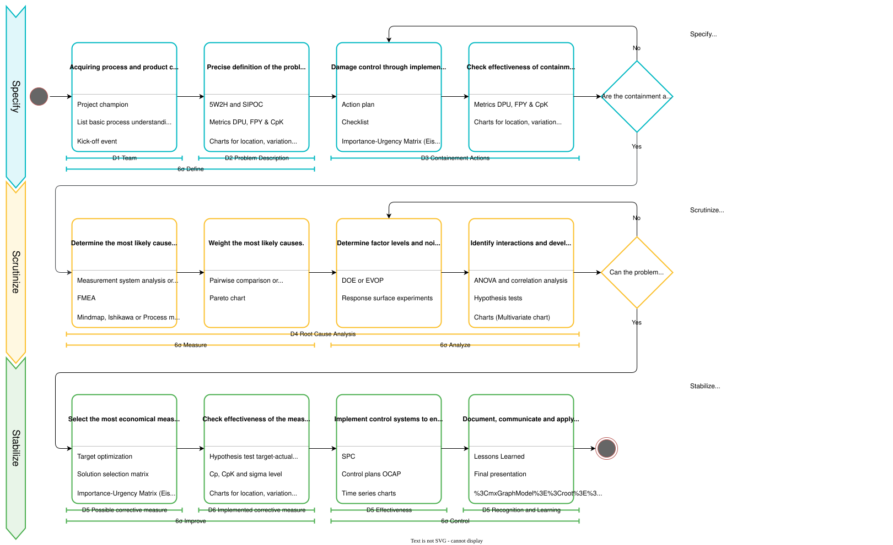

3S Methodology
The 3S methodology is a streamlined, three-phase problem-solving framework that combines the best elements from Task Force approaches, 8D methodology, and Six Sigma DMAIC. Think of it as a practical, no-nonsense approach to tackling complex problems—one that emphasizes getting it right rather than getting it fast.
Why 3S? Because Most Problems Are Trickier Than They Look
Ever thought you'd figured out a problem, only to have it come back and bite you? Or tried the "obvious" fix that somehow made things worse? Welcome to the club!
The reality is that most meaningful problems have hidden interactions lurking beneath the surface. What works in one situation might fail spectacularly in another because of factors you didn't even consider. A process tweak that's perfect at low temperatures might be a disaster at high temperatures. A solution that works for the day shift might confuse the night shift completely.
This is exactly why the 3S methodology exists—to help you navigate these hidden complexities systematically rather than stumbling around in the dark.
The Three Phases: Simple in Concept, Powerful in Practice

🔵 Specify - Define & Contain
"What exactly are we dealing with here?"
This is where you stop, take a breath, and get crystal clear about what's really going on. No assumptions, no wild guesses—just careful definition and smart containment to stop the bleeding while you investigate.
- Form a crack team with the right mix of skills and authority
- Define the problem with surgical precision (and actual numbers!)
- Contain the immediate damage so things don't get worse while you work
- Establish your baseline so you'll know when you've actually fixed something
🟡 Scrutinize - Investigate & Analyze
"Time to channel your inner detective."
Here's where the real work happens. This phase is all about transforming your hunches into hard evidence. Think CSI, but for processes and systems.
- Investigate systematically using proven root cause analysis techniques
- Let the data tell the story through statistical analysis and hypothesis testing
- Hunt for interactions between factors that might be causing unexpected behavior
- Build an airtight case for what's really causing the problem
🟢 Stabilize - Implement & Control
"Make it stick!"
You've found the culprit—now it's time to fix it permanently and make sure it stays fixed. This isn't about quick patches; it's about sustainable solutions.
- Choose the best solution based on what actually works (not just what's convenient)
- Implement with validation to prove your fix actually fixes things
- Build control systems that will catch problems before they become problems
- Share the knowledge so others can learn from your experience
Why 3S Works: Key Advantages
It's Streamlined but Still Rigorous
The 3S methodology cuts through the complexity of traditional problem-solving frameworks while keeping all the scientific rigor. You get the structure you need without drowning in bureaucracy.
It Builds on Proven Methods
Rather than reinventing the wheel, 3S cherry-picks the best elements from:
- Task Force approaches for rapid mobilization and accountability
- 8D methodology for structured problem-solving steps
- Six Sigma DMAIC for data-driven analysis and statistical rigor
It's Designed for Real-World Application
Each phase has specific tools and clear deliverables. No wondering "what do I do next?"
| Phase | Key Tools | What You Get |
|---|---|---|
| Specify | SIPOC, Project Charter, Containment Actions | Crystal-clear problem definition |
| Scrutinize | Root cause analysis, DOE, ANOVA, hypothesis testing | Rock-solid evidence of what's really wrong |
| Stabilize | Control plans, SPC, validation studies | A solution that actually sticks |
Practical Insights from the Field
What Makes 3S Different in Practice
Team Composition is Critical
Unlike traditional Six Sigma where the Champion and Process Owner are often separate roles, 3S emphasizes a taskforce approach: the team must include everyone who has the competence and authority to make changes happen immediately. This means:
- The Process Owner must be in the team (not just as support) to ensure motivation for process changes
- Development or Product Care engineers must participate to adapt drawings or create special releases
- All necessary competencies and authorities to reshape processes and adapt specifications must be present
This is the single biggest acceleration factor - new insights can be implemented directly without waiting for approvals or handoffs.
Realistic Project Timelines
Six months for a 3S project is good—many traditional Six Sigma projects unfortunately run for several years. The important realization is that most project time is not due to the methodology but rather the necessities that a project brings (waiting for experiments, coordinating resources, implementing changes, etc.).
Tool Sequencing Matters
While statistical tools should be used everywhere they make sense, the sequence of major steps should not be shuffled:
- Hypothesis testing in early phases (Specify/D3): Absolutely—use them to validate assumptions about the problem
- Measure phase: Focus on MSA and breaking down the process into components, not on experiments yet
- Design of Experiments (DOE): Comes after you understand the process structure
- Hypothesis testing after experiments: Validate your findings from targeted, designed experiments
Why this order matters: Without a clear sequence, experiments and containment actions can get completely out of control—nobody keeps track of what has which influence. This makes it nearly impossible to reach a sustainable solution.
!!! warning "Mix Tools, Not Phases" Feel free to mix or skip individual tools based on your situation, but do not skip or mix the main boxes in the 3S process flow. The structure keeps you from getting lost.
Navigation and Clarity
One major advantage of 3S over traditional DMAIC: you get less lost in individual phases. In practice, it doesn't really matter which phase or which "D" you're in—what matters is that you're doing the right thing at the right time. The 3S framework gives you:
- A clear overview of all available tools
- A logical sequence that prevents chaos
- Easy resumability when projects pause (e.g., waiting weeks for experiment results)
The "Scrutinize" Phase
The term "Skrutinieren" (Scrutinize) comes from Latin scrutari meaning "to investigate" or "to examine carefully." It was chosen because:
- It accurately describes what happens in this intensive investigation phase
- It starts with 'S' in both English and German, maintaining the 3S naming consistency
- It's distinctive and memorable (even if uncommon)
This phase represents the time-intensive detective work, but the integrated containment in the Specify phase ensures production is already stabilized before you dive deep into investigation.
Tool Selection Philosophy
3S gives you the freedom to choose exactly the tools that fit your problem. This is especially valuable when compared to 8D, which provides a good structure for approaching problems but offers limited specific tools (mainly 5Why and Ishikawa).
Six Sigma brings the rich toolset, but 3S organizes it into a clearer, more navigable framework. Think of it as: 8D provides the process skeleton, Six Sigma provides the analytical muscles, and 3S is the nervous system that coordinates everything efficiently.
Documentation for Resumability
When projects must pause (waiting for parts, experiment results, approvals), documentation of the current state is crucial. The 3S framework helps because:
- Each phase has clear deliverables
- The tool sequence shows where you stopped
- You can pick up exactly where you left off
!!! tip "Stay Organized" Consider creating templates for tools not integrated in your statistical software. This ensures consistency and makes it easier to resume work after breaks.
When Should You Use 3S?
Perfect for These Situations
- Manufacturing defects that keep coming back no matter what you try
- Quality issues where the root cause isn't obvious
- Customer complaints that require serious investigation (not just apologies)
- Process problems where simple fixes haven't worked
- Supplier issues that need systematic resolution
You'll Need These Prerequisites
- A measurable problem (if you can't measure it, you can't fix it properly)
- Available data or the ability to collect meaningful information
- Management backing for the resources and time you'll need
- The right people willing to work together on the solution
Fair Warning: When NOT to Use 3S
If the problem is simple enough that one person can fix it in an afternoon, 3S might be overkill. Save it for the complex, multi-faceted problems that really need the systematic approach.
Ready to Get Started?
Your Next Steps
- Start with Specify - Get your team together and nail down exactly what you're dealing with
- Move to Scrutinize - Channel your inner detective and find the real culprit
- Finish with Stabilize - Fix it for good and make sure it stays fixed
Pro Tips for Success
- Don't rush the problem definition - most project failures start with a fuzzy understanding of what you're trying to solve
- Let the data guide you - your intuition is valuable, but data doesn't lie
- Engage your stakeholders - the best technical solution is useless if people won't support it
- Think long-term - quick fixes are tempting, but they usually just postpone the real work
Common Ways to Mess This Up (Learn from Others' Mistakes!)
- Jumping straight to solutions without understanding the problem
- Skipping the investigation phase because "we already know what's wrong"
- Implementing solutions without proper validation
- Forgetting to put controls in place to prevent recurrence
DaSPi: Your 3S Toolkit
The DaSPi library provides everything you need to implement 3S methodology effectively:
- Statistical analysis tools for rigorous data investigation
- Visualization capabilities to make your findings crystal clear
- Design of Experiments for systematic testing
- Process control charts to maintain your improvements
Ready to tackle that problem that's been driving you crazy? Start with the Specify phase and begin your journey toward a real, lasting solution.